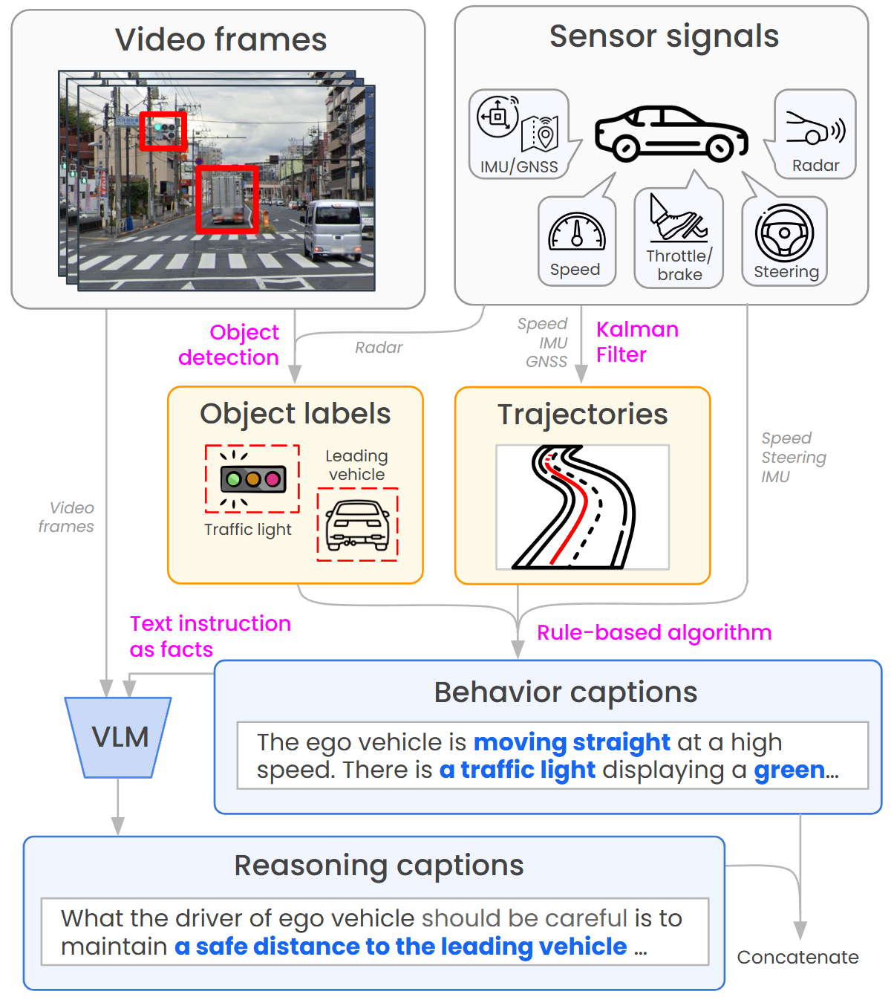

自動運転、特に複雑かつ予期しないシナリオのナビゲーションには、高度な推論・プランニング能力が必要である。マルチモーダル大規模言語モデル（MLLM）はこのための有望な手段を提供するが、その用途は主に複雑な環境コンテキストの理解や高レベル走行コマンドの生成に限られており、エンドツーエンドの経路計画への応用を拡張した研究は少ない。主要な研究上のボトルネックは、ビジョン・言語・アクションを包含する大規模アノテーションデータセットの欠如である。
この問題に対処するため、本論文ではCoVLA（Comprehensive Vision-Language-Action）データセットを提案する。CoVLAは80時間以上の実世界走行動画を含む広範なデータセットである。このデータセットは、自動化データ処理とキャプション生成パイプラインに基づくスケーラブルな新規アプローチを活用して、走行環境と操縦についての詳細な自然言語記述と対になった正確な走行軌跡を生成する。このアプローチは車載センサーの生データを活用し、既存データセットを規模とアノテーション品質で上回ることを可能にする。CoVLAを用いて、様々な走行シナリオでビジョン・言語・アクションを扱えるMLLMの走行能力を検討した。
自動運転技術の主要な課題は、多様で予測不可能な走行環境の「ロングテール」への対応である。自動運転車は一般的なシナリオだけでなく、レアで複雑な状況もナビゲートする必要があり、多様な世界知識と高度な推論能力が求められる。これは、単なるオブジェクト認識を超えてその行動を解釈し、それに応じたアクションを計画するための環境の深い理解と推論能力を要求する。
Vision-Language-Action（VLA）モデルは、視覚的知覚・言語理解・アクションプランニングをシームレスに統合することで、この目標への有望な経路として浮上した。特にロボティクスや自動運転におけるVLAの最近の進歩は、より堅牢で知的な走行システムの実現可能性を示している。
しかし、VLAモデルを自動運転に適用する主要な障壁は、視覚データ・言語記述・走行アクションを効果的に組み合わせた大規模データセットの欠如である。既存のデータセットは規模と包括的なアノテーション（特に言語について）において不十分であることが多く、これが現実の走行の複雑さを処理できる堅牢なVLAモデルの開発・評価を制限している。
本論文の主要な貢献は以下の通りである：
自動運転の研究はデータセットの発展と深く結びついている。これらのデータセットの進化は、豊かなセンサーとモダリティの組み込みという明確なトレンドを示しており、個別タスク（物体認識など）から場面理解・動作予測・エンドツーエンド走行などの複雑な課題へと移行してきた。
大規模マルチモーダルデータセットの主要な例として以下が挙げられる：
近年、LLMの発展に伴い、MLLMを複雑な走行環境理解と走行操作プランニングに活用しようとする試みが登場した。これにより、交通環境に特化したビジョン言語データセットが出現した：
しかし、これらのデータセットはアクションとして高レベルの走行コマンド（「停止」「左折」など）のみを提供することが多く、詳細な走行操縦の表現とエンドツーエンド自動運転システムの学習に不可欠な細粒度の軌跡情報を欠いている。
HAD、Talk2Car、Talk2Car-Trajectory、DriveLMなどは、より細粒度のアクションアノテーションとして軌跡情報を含むビジョン言語データセットである。しかし、これらのデータセットは特にカバーする走行シナリオの多様性と複雑さの点で規模が限られており、真に堅牢で汎用性の高いVLAモデルの開発を支えることができない。
自動運転の複雑で予測不可能な性質（特に走行分布の「ロングテール」、例えば道路閉鎖のナビゲーション）への対応は、自律システムにより高度な推論・意思決定能力を必要とする。最近の研究では、MLLMを自動運転システムに組み込む取り組みが増加しており、高度な推論・言語理解能力を活用してこれらの課題に対処することを目指している。
主要な研究例として以下が挙げられる：
このセクションでは、CoVLA-Datasetについて詳細に説明する。CoVLA-Datasetは自動運転研究の価値あるリソースとして、その構造・内容・作成方法を詳述する。本データセットは以下を特徴とする：
この広範なVLAデータセットを作成するために、生データからシーン記述とグラウンドトゥルース軌跡を自動生成する新規スケーラブルなアプローチを開発した。
CoVLA-Datasetは、実世界走行データの自動処理と豊富なアノテーション生成を組み合わせた新規パイプラインによって構築された。車載センサーデータ（フロントカメラ映像・速度・ステアリング角度・GPS座標などの車両状態）を入力として、精密なセンサーフュージョンによって走行軌跡を推定し、走行シーンの詳細なテキスト記述を自動生成する。キャプション生成には、交通信号検出と前方車両検出のセンサーフュージョン結果を活用し、走行シーンの主要要素（車速・操作・交通状況など）を自動的に記述する。
CoVLA-Datasetには10,000の走行シーンが含まれ、各シーンは30秒間で、合計80時間以上のビデオデータを構成する。各フレームは速度・ステアリング角度・軌跡座標などの車両状態情報を含む。このデータセットは以下の点で既存データセットを上回っている：
このセクションでは、CoVLA-Datasetを活用した基準モデルCoVLA-Agentの開発と評価方法論を提示する。データセット・モデル設定・学習手順・評価メトリクスを含む実験設定を詳述し、結果を分析する。
CoVLA-Agentは、CoVLA-Datasetを使用して学習されたVLAモデルであり、走行シナリオの軌跡予測と交通シーン記述生成を行う。このモデルは、ビジョン・言語・アクションの3つのモダリティを統合した設計となっており、走行環境の視覚的理解から詳細な言語記述の生成、そして具体的な走行軌跡の予測まで一貫して処理する能力を持つ。
CoVLA-Agentはフロントカメラ画像、車両状態（速度・ステアリング角度など）、および自動生成キャプションを入力として受け取り、将来の走行軌跡と詳細な走行シーン記述を出力する。評価にはADE（平均変位誤差）とFDE（最終変位誤差）が使用され、モデルの軌跡予測精度を測定する。
定性的な結果において、グラウンドトゥルースキャプションを使用した場合のADE（0.814）とFDE（1.655）は、予測キャプション使用時のADE（0.955）とFDE（2.239）よりも低い値を示した。この結果から、CoVLA-Agentはグラウンドトゥルースキャプションを使用した場合により良いパフォーマンスを発揮することが示されている。
様々な走行シナリオにわたるモデルパフォーマンスを分析した：
予測キャプションにおけるエラーが軌跡に与える影響を調査した結果、キャプションのエラー（特に「減速」「左」「カーブ」「右折」などの車両動作方向・加速に関連する語）があるとADEとFDEが大きくなることが分かった。これらの観察から、生成されたキャプションを使用した場合の軌跡予測の比較的低いパフォーマンスは、単一フレームからの意図推定の難しさに起因していると考えられる。
これらの振る舞いは、CoVLA-Datasetがモデルに一貫したキャプションと軌跡を生成させ、様々な走行シーンを処理する優れた能力を示しており、複雑なシナリオを管理するための自動運転モデルの学習に有用であることを実証している。
本研究では、VLAモデルを用いた自動運転向けの新規データセットであるCoVLA-Datasetを提示した。スケーラブルな自動化アプローチを活用して、詳細な言語アノテーションで強化された大規模・包括的なデータセットを構築した。この堅牢なデータセットを基盤として、高度なVLA自動運転モデルであるCoVLA-Agentを開発した。評価結果は、一貫した言語とアクション出力を生成するモデルの高い能力を強調している。これらの知見はVLAマルチモーダルモデルの革新的な可能性を強調し、自動運転研究の将来的なイノベーションへの道を開く。
一部の事例では軌跡データの不安定性が検出された。具体的に以下の2つの誤った挙動が識別された：
CoVLA-DatasetはHuggingFaceで公開された。プライバシー保護のため、CoVLA-Datasetの画像と動画において人間の顔とナンバープレートを匿名化した。匿名化にはDashcam Anonymizerを使用した。
CoVLA-Datasetのサンプルデータを提示する。各データポイントは画像・キャプション・車両状態を含む。自動キャプション生成には、OpenLendaが提供する交通信号検出とセンサーフュージョンによる前方車両検出結果を使用する。各フレームには速度・ステアリング角度・軌跡の座標などの情報が含まれる。